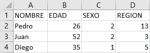

4.2 Datos cuantitativos:
4.2.1 Bases de datos y curatoria
Una base de datos es un conjunto de información organizada de modo estructural que permite almacenar distintas capas de información. Las bases de datos no son equivalentes a las matrices (Ver ejemplo de matriz en imagen 1) pues poseen más información además de las variables, lo casos y los valores, como la descripción de las variables, las etiquetas de las categorías o el tipo-clase de información contenida. Incluso las bases de datos pueden contener información sobre el formato en el que están (p ej. SPSS). De hecho, al pasar una base de datos a una simple matriz se pierde información.
En este ejemplo de matriz, podemos ver como la información contenida simplemente posee el nombre de los sujetos (a,b,c), las variables (1,2,3) y los valores (“y”, “x”).
## [,1] [,2] [,3]
## a "1" "2" "3"
## b "3" "2" "1"
## c "2" "3" "1"Ahora veamos la estructura de esta matriz en base al argumento str del sofware R, el cual nos permite visualizar los componentes de un objeto.
## chr [1:3, 1:3] "1" "3" "2" "2" "2" "3" "3" "1" "1"
## - attr(*, "dimnames")=List of 2
## ..$ : chr [1:3] "a" "b" "c"
## ..$ : NULL
## NULLComo se puede ver la estructura de la matriz es relativamente simple. A continuación, se expone la estructura de una base de datos del centro COES, la base ELSOC, esta base fue recortada para solo poseer tres variables como la matriz anterior. Si bien es bastante complejo leer la estructura de la matriz y la base de datos, para este ejercicio basta con darse cuenta de que la base de datos posee una estructura más compleja y mayor información que la matriz.
ELSOC <- read_dta("ELSOC_W01_v2.00_Stata14.dta")
ELSOC_3 <- select(ELSOC, t01, r01_01, c01)
print(str(ELSOC_3))## tibble [2,983 x 3] (S3: tbl_df/tbl/data.frame)
## $ t01 : dbl+lbl [1:2983] 1, 3, 3, 3, 2, 2, 3, 3, 3, 2, 3, 2, 3, 3, 4, 3, 2, 2,...
## ..@ label : chr "Cuanto confia usted en sus vecinos"
## ..@ format.stata: chr "%12.0g"
## ..@ labels : Named num [1:7] -999 -888 1 2 3 4 5
## .. ..- attr(*, "names")= chr [1:7] "No Responde (no leer)" "No Sabe (no leer)" "Muy poco" "Poco" ...
## $ r01_01: dbl+lbl [1:2983] 1, 1, 1, 3, 1, 3, 1, 1, 1, 1, 1, 1, 1, 2, 2, 1, 2, 2,...
## ..@ label : chr "Num. Conocidos: Gerente o director de gran empresa"
## ..@ format.stata: chr "%12.0g"
## ..@ labels : Named num [1:9] -999 -888 1 2 3 4 5 6 7
## .. ..- attr(*, "names")= chr [1:9] "No Responde (no leer)" "No Sabe (no leer)" "Ninguno" "Uno" ...
## $ c01 : dbl+lbl [1:2983] 1, 1, 1, 1, 2, 1, 3, 3, 3, 1, 4, 3, 1, 1, 1, 2, 3, 3,...
## ..@ label : chr "Satisfaccion con la democracia en Chile"
## ..@ format.stata: chr "%12.0g"
## ..@ labels : Named num [1:7] -999 -888 1 2 3 4 5
## .. ..- attr(*, "names")= chr [1:7] "No Responde (no leer)" "No Sabe (no leer)" "Nada satisfecho" "Poco satisfecho" ...
## NULLAhora bien, la utilidad de tener una buena base de datos, con etiquetas, variables y categorías bien estructuradas, es que facilita el análisis y el trabajo con la base de dato de modo tal que los gráficos de los programas reconocen esta estructura. Además, tener la base de datos bien estructurada y con información permite identificar las variables de modo correcto, disminuyendo los posibles errores. A continuación, podemos ver la misma base de datos de la cual evaluamos a estructura, a partir de un código que genera un libro de códigos automáticos.
| ID | Name | Type | Label | Values | Value Labels |
|---|---|---|---|---|---|
| 1 | t01 | numeric | Cuanto confia usted en sus vecinos |
-999 -888 1 2 3 4 5 |
No Responde (no leer) No Sabe (no leer) Muy poco Poco Algo Bastante Mucho |
| 2 | r01_01 | numeric | Num. Conocidos: Gerente o director de gran empresa |
-999 -888 1 2 3 4 5 6 7 |
No Responde (no leer) No Sabe (no leer) Ninguno Uno Entre 2 y 4 Entre 5 y 7 Entre 8 y 10 Entre 11 y 15 16 o mas |
| 3 | c01 | numeric | Satisfaccion con la democracia en Chile |
-999 -888 1 2 3 4 5 |
No Responde (no leer) No Sabe (no leer) Nada satisfecho Poco satisfecho Algo satisfecho Bastante satisfecho Muy satisfecho |
Por el contrario, si tenemos una “base de datos” que es creada en excel como en la imagen posterior, sin estructurar el contenido sobre las etiquetas de las variables ni las etiquetas de los valores y utilizamos el mismo código para la creación un libro de códigos, este no será muy informativo. Esto dificultaría el trabajo con esta base de datos, haciendo necesario agregar las etiquetas manualmente facilitando errores de codificación.

| ID | Name | Label | Values | Value Labels |
|---|---|---|---|---|
| 1 | NOMBRE | <output omitted> | ||
| 2 | EDAD | range: 26-52 | ||
| 3 | SEXO | range: 1-2 | ||
| 4 | REGION | range: 3-13 | ||
Además de que las bases de datos se encuentren bien estructuradas es importante que las etiquetas de las variables y las categorías se encuentren codificadas en “UTF-8” para que las letras puedan ser interpretadas por algunos softwares. Además de tener este tipo de codificación, es necesario que las bases de datos no posean tildes ni signos especiales (p. ej ¿ " , ;), preferentemente solo dígitos alfanuméricos. De lo contrario se generan problemas de codificación que resultan en errores visibles como los que se presentan a continuación.
EncuestaCEPjul <- read_sav("EncuestaCEPjul.sav")
Encuesta_CEP <- select(EncuestaCEPjul, SV1, MB_P2, ELE_7_1)
sjPlot::view_df(Encuesta_CEP, encoding = "UTF-8")| ID | Name | Label | Values | Value Labels |
|---|---|---|---|---|
| 1 | SV1 |
Considerando todas las cosas, ¿cuán satisfecho está usted con su vida en este momento? |
1 10 88 99 |
Totalmente insatisfecho Totalmente satisfecho No sabe No contesta |
| 2 | MB_P2 |
¿Cómo calificarÃa Ud. la actual situación económica del paÃs? |
1 2 3 4 5 8 9 |
Muy mala Mala Ni buena ni mala Buena Muy buena No sabe No contesta |
| 3 | ELE_7_1 |
Para cada actividad que le nombraré indique si Ud. la realiza frecuentemente, a veces, o nunca. Mira programas polÃticos en televisión |
1 2 3 8 9 |
Frecuentemente A veces Nunca No sabe No contesta |
Junto de la importancia de la estructura de la base de datos, las etiquetas y la codificación es necesario revisar algunos otros puntos sobre una base de datos sociales antes de subirla, como lo pueden ser el tema de la documentación necesaria o el tema de la privacidad, a continuación, haremos una revisión de los distintos temas que son importantes para la publicación de una base de datos.
El proceso de preparación por el cual se llega a una base bien etiquetada, bien codificad y anonima se denomina curatoria. Por ello, la curatoria de datos es fundamental antes de compartir una base de datos para que todos los usuarios de ella puedan comprender adecuadamente su contenido y trabajar con la menor cantidad de complicaciones.
4.2.2 Guía ICPSR sobre calidad de datos.
Para resguardar al calidad de los datos cuantitativos ICPSR propone, entre otros, los siguientes puntos:
4.2.2.1 Errores de codificación
Verifique cuidadosamente la coherencia entre las respuestas del cuestionario y los valores en la base de datos para el primer 5 a 10 por ciento de los registros de datos creados y luego elija registros aleatorios para controles de calidad. Posteriormente, puede realizar analisis descriptivos de distribución para evaluar si existen valores atipicos atribuibles a errores de codificación (p ej. 66 en la variable hijos en ves de 6). El uso de computadores y programas de encuesta y codificación puede ayudar a disminuir estos errores.
4.2.2.1.1 Recodificación automatica
Deje que la computadora realice codificaciones y rectificaciones complejas si es posible. Por ejemplo, para crear un serie de variables que describen la estructura familiar, escriba un código de computadora para realizar la tarea. Los códigos de computadora no solo son precisos si las instrucciones son precisas, sino que también pueden también se puede cambiar fácilmente para corregir un error lógico o de programación. Incluya en la documentación los codigos utilizados para la recodificación.
4.2.2.1.2 Consistencia
Evalue la coherencia entre las variables, identificando a quienes poseen convinaciones incoherentes. Por ejmplo, si alguien señala que su hijo no asiste a la escuela y luego responde preguntas sobre la escuela.
4.2.2.2 Identificadores individuales y grupales
Proporcione variables identificadoras suficientes. Es fundamental que cada sujeto posea un id, además si la encuesta es longitudinal se puede proporcionar, junto al id de encuestado, un id por cada ocación que contesta la encuesta. Otros identificadores dependen del tema del estudio, por ejemplo, si se trabaja con escuelas, verifique que cada escuela tiene un identificador id-escuela. Si trabaja con encuestados de modo tal que dos o más son de la misma familia y cada encuestado corresponde a un nucleo familiar, indique un id para familia.
4.2.2.3 Nombres de Variables
El nombre de la variable sera con lo que más se trabajara con los datos, por ende deben ser claros y utilizables por disintintos softwares.
Existen distintos estandartes para elegir los nombres de las variables.
El primero consiste asignar un numero único anteponiendo una V de modo tal que, siendo n el numero de variables, las variables se nombran como Vn según su posición (p ej. V0001, v0002,…Vn). Se antepone la V por que los software en general no permiten nombres de variables con solo caracteres números.
El segundo modo utiliza letras y números para agrupar las variables según escalas o temas (p. ej Q1,Q2a,Q2b), si bien es un sistema que entrega más información, no informa sobre el contenido.
3.El tercero consiste en utilizar abreviaturas nemotecnicas, es decir, nombres cortos de variables que representan el significado sustantivo de las variables facilitando su memorización y comprensión. Por ejemplo educpadr como “Educación del Padre”. Este tipo de nombres podrian ayudar a disminuir los errores en los análisis producidos por agregar una variable incorrecta en el código. El problema es que con la limitación de caracteres de los software es difícil generar abreviaturas arbitrarias que sean ampliamente reconocibles por un publico diverso.
- El cuarto consiste en Abreviaciones compartidas y registradas. Un sistema de raices y sufijos. Por ejemplo, todas las variables que tienen que ver con la educación pueden tener la raíz ED, y podria expresarse “Educación del Padre” como FAED, siendo estas nomesclatura previamente documentada. Esto implica una planificación previa y capacidad de organización para compartir las abreviaturas, así como herramientas para facilitar el encontrar las abreviaturas correctas en la biblioteca o documento de sufijos y prefijos.
En consideración de estas opciones expuestas por ICPSR, se recomienda utilizar la tercera, puesto que cumple con la cualidad de la primera y la segunda de identificar las variables de modo único, a la vez que cumple con el criterio de hacer más comprensible y facil de recordar.
Junto a lo señalado por ICPSR, consideramos que al crear un nombre de la variable este debe ser utilizable por los distintos sofwares comunmente utilizados como SPSS, STATA y R. En vista de lo anterior sugerimos:
Dos variables no pueden tener el mismo nombre
No utlizar más de 12 caracteres en el nombre
Empezar con una letra
Deben ser solo alfanuméricos (Numeros y letras, sin símbolos . ; , : “ $ @)
En minúscula
No utilizar la letra ñ, remplazarlo por gn (agnos, en vez de años)
Remplazando espacios por guionbajo. (edad_rec)
4.2.2.3.1 Etiquetas de variables
las variables deben ser correctamente etiquetadas. Las etiquetas deben partir con el numero del item en el cuestionario para poder asociarlo. Luego debe darse información sobre el contenido de la variable o ingresar directamente la pregunta realizada al encuestado.
Considerando las limitaciones de caracteres de los sofwares, en base a manuales universitarios de SPSS y STATA, se sugiere que las etiquetas de las variables no superen los 120 caracteres.
4.2.2.4 Codificación
Variables de identificación. Proporcione campos al comienzo de cada registro para acomodar todas las variables de identificación. Las variables de identificación a menudo incluyen un número de estudio único y un número de encuestado para representar cada caso.
Categorías de código. Las categorías de códigos deben ser mutuamente excluyentes, exhaustivas y estar definidas con precisión. Cada respuesta de la entrevista debe encajar en una y solo una categoría. La ambigüedad provocará dificultades de codificación y problemas con la interpretación de los datos.
Conservación de la información original. Codifique tantos detalles como sea posible. Registrar datos originales, como edad e ingresos, es más útil que colapsar o poner entre corchetes la información. Con datos originales o detallados, los analistas secundarios pueden determinar otros paréntesis significativos por sí mismos en lugar de limitarse a los elegidos por otros.
Preguntas cerradas. Las respuestas a las preguntas de la encuesta que están precodificadas en el cuestionario deben conservar este esquema de codificación en los datos legibles por máquina para evitar errores y confusiones.
Preguntas de final abierto. Para los ítems abiertos, los investigadores pueden usar un esquema de codificación predeterminado o revisar las respuestas iniciales de la encuesta para construir un esquema de codificación basado en las categorías principales que surgen. Cualquier esquema de codificación y su derivación deben informarse en la documentación del estudio.
Respuestas codificadas por el usuario. Cada vez más, los investigadores envían el texto completo de las respuestas a las preguntas abiertas a los archivos para que los usuarios puedan codificar estas respuestas ellos mismos. Debido a que dichas respuestas pueden contener información confidencial, deben ser revisadas por riesgo de divulgación y, si es necesario, tratadas por archivos antes de su publicación.
Comprobar codificación. Es una buena idea verificar o verificar el código de algunos casos durante el proceso de codificación, es decir, repetir el proceso con un codificador independiente. Por ejemplo, si se asigna más de un código a la respuesta de una entrevista, esto resalta problemas o ambigüedades en el esquema de codificación. Esta codificación de verificación proporciona un medio importante de control de calidad en el proceso de codificación.
Serie de respuestas. Si una serie de respuestas requiere más de un campo, organizar las respuestas en clasificaciones importantes significativas es útil. Respuestas dentro de cada especialidad categoría se les asigna el mismo primer dígito. Los dígitos secundarios pueden distinguir específicos respuestas dentro de las categorías principales. Tal esquema de codificación permite el análisis de la datos utilizando agrupaciones amplias o categorías más detalladas.
4.2.2.5 Identificar Casos perdidos
ICPSR no establece un modo determinado de identificar los perdidos aunque señala las ventajas y desventajas de distintos tipos de codificación. Igualmente sugiere distintos tipos de perdidos que deben ser identificados. Cabe destacar que como regla general para la preservación, los perdidos se deben codificar del modo más similar a las categorias de las variables, de modo tal que una variable numerica de un digito se indica con (8,9) y una variable categorica con alternativas de texto con (“No sabe”, “No responde”)
Rechazo / Sin respuesta. El sujeto se negó explícitamente a responder una pregunta o no la respondió cuando debería haberlo hecho.
No lo sé. El sujeto no pudo responder una pregunta, ya sea porque no tenía una opinión o porque la información requerida no estaba disponible (por ejemplo, un encuestado no pudo proporcionar los ingresos familiares en dólares del año anterior).
Error de proceso. Por alguna razón, no hay respuesta a la pregunta, aunque el sujeto proporcionó una. Esto puede resultar de un error del entrevistador, codificación incorrecta, falla de la máquina u otros problemas.
No aplica. Al sujeto nunca se le hizo una pregunta por alguna razón. A veces, esto se debe a patrones de omisión después de preguntas de filtro, por ejemplo, a los sujetos que no están trabajando no se les pregunta sobre las características del trabajo. Otros ejemplos de inaplicabilidad son los conjuntos de elementos solicitados solo de submuestras aleatorias y los solicitados a un miembro de un hogar pero no a otro.
Sin coincidencia. Esta situación surge cuando los datos se obtienen de diferentes fuentes (por ejemplo, un cuestionario de encuesta y una base de datos administrativa) y no se puede localizar la información de una fuente.
Datos no disponibles. La pregunta debería haberse formulado al encuestado, pero por un por otro motivo distinto de los enumerados anteriormente, no se dio ni registró ninguna respuesta.
Considerando las ventajas y desventajas de las distintas formas de codificación se sugiere a titulo personal utilizar valores perdidos con valores altos en negativo de modo tal que sean estandar para todas las variables y no sean confundible con los valores posibles de dichas variables. Se propone utilizar los siguientes valores perdidos, usando numericos o caracteres segÚn corresponda.
| Código de texto | Código numérico |
|---|---|
| No responde | -999 |
| No sabe | -998 |
| Error de Proceso | -997 |
| No aplica | -996 |
| Sin coincidencia | -995 |
| No disponible | -994 |
Para obtener información adicional sobre datos georeferenciados e imputaciones revise directamente la guía ofrecida por ICPSR disponible en este vinculo
- Las mismas variables en distintas olas deben tener el mismo nombre. Las variables que ayuden a conectar casos, por ejemplo cuestionarios de padres y apoderados (id-estudiante) en ambas bases. las variables para hacer merge